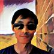

Hi! My name is Yinlin Wang (aka "Matt"). I am currently a Senior Software Engineer at Google Switzerland. If you have a job offer in Zurich, please feel free to contact me on LinkedIn or email me to request my full resume. Thank you.
With 18 years of experience spanning software engineering, release engineering, and quality engineering, I excel in architecting robust infrastructure and scalable platforms. Specializing in Release Engineering, CI/CD, DevOps, system integration, and Agile processes, I am a clean coder with exceptional troubleshooting skills and a passion for continuous learning.
At Google Switzerland, I spearheaded the development of shared CI/CD platforms for both Google Android and iOS projects, ensuring their successful launch and adoption. I have also contributed to improving Python code health across the company by mentoring Google's best practices. Previous roles include automating Workspace mobile releases while consolidating processes and consistently managing Gmail and Calendar mobile and web releases.
Prior to Google, I contributed as a Consultant Software Engineer at Dell/EMC, added features to an AWS S3-compatible object storage service across full stack. At JD.COM, I led a team in constructing vital log aggregation, deployment, and monitoring services for internal developers. Earlier experiences at Yahoo involved maintaining Chef clusters, advocating CI/CD solutions, and leading release engineering efforts. These roles collectively honed my skills in system integration, technical leadership, and fostering cross-team collaboration.
Outside of work, I contribute to open source projects, engage in the game of Go and computer Go, explore productivity and AI tools, and manage VPS and home servers. My interests extend to community contributions, Chrome extensions, system administration, Kubernetes, speech recognition, Data Analysis, and Machine Learning.